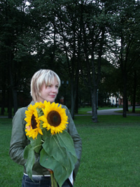
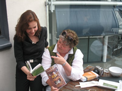
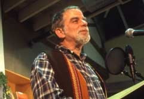
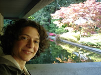

| |
Inga Abele is a writer and playwright who was born in Riga in 1972. She began her studies in biology at the University of Latvia, then left Riga to live in the country and work as a horse trainer. Following that she studied drama at the Latvian Academy of Culture. She has written three plays and several screenplays as well as and a novel and several collections of poetry and stories. Her debut collection of short stories Akas maja (The Well House) was published in 1999 to critical acclaim. In the same year, she received an award for her play Tumšie brieži (Dark Deer), published in Latvia’s literary monthly magazine Karogs (Flag) and later staged at theatres in Riga and Valmiera, as well as at the Stuttgart State Theatre in 2002, and the Bonner Biennale (2002). Her play Dzelzzale (Iron Weed) was staged in Latvia, Denmark and Finland, and the work Jasmins (Jasmine) premiered in May 2003 with the Independent Theatre Company “United Intimacy.” It will be staged in Lucerne, Switzerland in April 2007, under the direction of Peter Carp. Her collection of poetry, Nakts pragmatike (Night Pragmatist), appeared in 2000 and the novel Uguns nemodina (Fire Will Not Wake You) in 2001; the latter was published in Lithuanian in 2007. Another collection of short stories, Sniega laika piezimes (Notes During the Time of Snow), won the Annual Award for Literature in 2004, and a book of selected stories titled Still Life With Pomegranate was published in French by L’Archange Minotaure in 2005. Her most recent collection of poetry, Atgāzenes stacijas zirgi (The Horses of Atgazene Station), appeared in 2006.
|
 Inara Cedrins is an American artist, writer and translator of Latvian descent. She received her B.A. in writing at Columbia College in Chicago and her M.A. in Arts Administration at the School of the Art Institute of Chicago. She moved to New York in 1996 to paint at the Art Students League and participate in peer poetry workshops. In 1998 she went to China to learn to paint on silk, and remained five years, teaching English, writing and literature at Universities including Tsinghua University and Peking University in Beijing. In 2003 she went to Nepal to study Tibetan thangka painting but upon the king's coup d'etat in February 2005, she relocated to Riga, Latvia, where she started a literary agency called The Baltic Edge and taught creative writing at the University of Latvia. She returned to America in 2006 and settled in the Albuquerque/Santa Fe area. From her cross-cultural experiences she writes poetry, short stories and novels. Inara Cedrins is an American artist, writer and translator of Latvian descent. She received her B.A. in writing at Columbia College in Chicago and her M.A. in Arts Administration at the School of the Art Institute of Chicago. She moved to New York in 1996 to paint at the Art Students League and participate in peer poetry workshops. In 1998 she went to China to learn to paint on silk, and remained five years, teaching English, writing and literature at Universities including Tsinghua University and Peking University in Beijing. In 2003 she went to Nepal to study Tibetan thangka painting but upon the king's coup d'etat in February 2005, she relocated to Riga, Latvia, where she started a literary agency called The Baltic Edge and taught creative writing at the University of Latvia. She returned to America in 2006 and settled in the Albuquerque/Santa Fe area. From her cross-cultural experiences she writes poetry, short stories and novels.
|
|
Ahmad Shah Patras Bukhari (?-1958) is known as one of the greatest writers of Urdu humor. He was born in Peshawar in modern-day Pakistan, but the details of his earlier life remain sketchy. Nami Ansari, the author of the Urdu volume Twentieth Century Humor and Satire, states that Patras Bukhari was born in 1908, and yet Patras Bukhari’s essays call this into question: “Me and Mabel,” an essay about his time at Cambridge University, bears the date November 1919. After receiving his education, he joined All India Radio in 1937 and became its director. He was an educator, bureaucrat, and diplomat as well. He was a Professor of English literature at the Central Training College in Lahore and then at the Government College in Lahore. Just before Indian Independence, he became the principal of the Government College. Later he was appointed Pakistan’s permanent member of the United Nations. He was appointed the Deputy Director of the UN’s Department of Information in 1955. He died of a heart attack three years later.
|
 Aftab Ahmad earned his PhD in Urdu from Jawaharlal Nehru University in New Delhi. He headed the AIIS Urdu Language Program in Lucknow from 2001 up to this August when he came to the States to teach Urdu at the University of California at Berkeley. Aftab Ahmad earned his PhD in Urdu from Jawaharlal Nehru University in New Delhi. He headed the AIIS Urdu Language Program in Lucknow from 2001 up to this August when he came to the States to teach Urdu at the University of California at Berkeley.
|
 Matt Reeck is a writer and translator. With Aftab Ahmad, he recently completed a manuscript entitled Bombay Stories, a collection of short stories translated from the Urdu of Saadat Hasan Manto. He has studied Urdu in New Delhi as part of a Fulbright scholarship and at the American Institute of Indian Studies (AIIS) Urdu Language Program in Lucknow. He has published poetry and prose in English, French, and Hindi. He currently lives in Brooklyn, NY. Matt Reeck is a writer and translator. With Aftab Ahmad, he recently completed a manuscript entitled Bombay Stories, a collection of short stories translated from the Urdu of Saadat Hasan Manto. He has studied Urdu in New Delhi as part of a Fulbright scholarship and at the American Institute of Indian Studies (AIIS) Urdu Language Program in Lucknow. He has published poetry and prose in English, French, and Hindi. He currently lives in Brooklyn, NY.
|
 Andres Ehin has written 12 books of poetry, two novels, and a collection of short stories. His poems have won many awards, including the Estonian National Prize and the Estonian Cultural Capital Prize for the best book of the year. Ehin has also translated many authors into Estonian and is a recipient of the Finnish Ponkala Foundation Prize for the best introduction of Finnish culture abroad. Andres Ehin has written 12 books of poetry, two novels, and a collection of short stories. His poems have won many awards, including the Estonian National Prize and the Estonian Cultural Capital Prize for the best book of the year. Ehin has also translated many authors into Estonian and is a recipient of the Finnish Ponkala Foundation Prize for the best introduction of Finnish culture abroad.
|
 Brandon Lussier was a 2003 Fulbright Scholar to Estonia. He has since received a fellowship from the American Literary Translators Association and grants from the Minnesota State Arts Board and the Jerome Foundation. He lives in Minneapolis, where he founded the Midwest’s only poetry-specific lending library in 2001. Brandon Lussier was a 2003 Fulbright Scholar to Estonia. He has since received a fellowship from the American Literary Translators Association and grants from the Minnesota State Arts Board and the Jerome Foundation. He lives in Minneapolis, where he founded the Midwest’s only poetry-specific lending library in 2001.
|
 Hasso Krull, through translation and academic essays, has familiarized Estonian readers with European thinkers such as Jacques Derrida, Georges Bataille, Michel Foucault, Jacques Lacan and Pierre Bourdieu. His books of original poetry include Luuletused:1987-1991 (1993), Trepp (1996), Jazz (1999), Kaalud (1997), Kornukoopia (2001), Meeter ja Deemeter. Eepos (2004), and Talv (2006). Krull’s work has been included in all anthologies of contemporary Estonian poetry published in Estonia during the past fifteen years. Hasso Krull, through translation and academic essays, has familiarized Estonian readers with European thinkers such as Jacques Derrida, Georges Bataille, Michel Foucault, Jacques Lacan and Pierre Bourdieu. His books of original poetry include Luuletused:1987-1991 (1993), Trepp (1996), Jazz (1999), Kaalud (1997), Kornukoopia (2001), Meeter ja Deemeter. Eepos (2004), and Talv (2006). Krull’s work has been included in all anthologies of contemporary Estonian poetry published in Estonia during the past fifteen years.
English translations of his poems have appeared in A Sharp Cut: Contemporary Estonian Literature, published by the Estonian Literature Information Centre in Tallinn, 2004, as well as in Sirena: Poesia, Arte y Critica, a U.S. journal of poetry in translation.
|
Eva Liina Asu-Garcia is from Tartu, Estonia, where
she studied English and Swedish language and
literature. She holds an M.Phil in applied linguistics
and a PhD in linguistics, both from Cambridge
University. She has worked as a university lecturer
and researcher in linguistics, and as a pronunciation
linguist at the BBC in London. Recently, she returned
to her hometown to continue her academic career at the
University of Tartu. She also works as a freelance
translator. |
 Ferreira Gullar was born in 1930 in equatorial São Luís do Maranhão and currently lives in Rio de Janeiro, Brazil. Initially drawn to painting, by the time he was in his twenties he had turned to poetry and wrote his first book of verse, A Luta Corporal (1954) [Corporal Struggle]. Following this he became part of a prominent generation of Concretist poets. In subsequent years, however, his eye and pen shifted to the effects of Brazil’s brutal dictatorship, the effects of which forced him into foreign exile, which in turn led to his best known book, Poema Sujo (1976) [Dirty Poem], a work he later called his “last will and testament.” Following a thaw in political conditions, Gullar returned to Brazil where his literary stature and symbolic presence has grown and has served as an inspiration for generations of Brazilians. A recent nominee for the Nobel Prize in literature, he has continued to work as a journalist, art critic and poet. Ferreira Gullar was born in 1930 in equatorial São Luís do Maranhão and currently lives in Rio de Janeiro, Brazil. Initially drawn to painting, by the time he was in his twenties he had turned to poetry and wrote his first book of verse, A Luta Corporal (1954) [Corporal Struggle]. Following this he became part of a prominent generation of Concretist poets. In subsequent years, however, his eye and pen shifted to the effects of Brazil’s brutal dictatorship, the effects of which forced him into foreign exile, which in turn led to his best known book, Poema Sujo (1976) [Dirty Poem], a work he later called his “last will and testament.” Following a thaw in political conditions, Gullar returned to Brazil where his literary stature and symbolic presence has grown and has served as an inspiration for generations of Brazilians. A recent nominee for the Nobel Prize in literature, he has continued to work as a journalist, art critic and poet.
|
 Leland Guyer teaches Spanish and Portuguese at Macalester College in Saint Paul, Minnesota. His most recent translations are Poema Sujo/Dirty Poem by Ferreira Gullar, The Spectacle of the Races by Lilia Moritz Schwarcz, and Intimate Enemies, No Sin South of the Equator by Joyce Cavalcante. Leland Guyer teaches Spanish and Portuguese at Macalester College in Saint Paul, Minnesota. His most recent translations are Poema Sujo/Dirty Poem by Ferreira Gullar, The Spectacle of the Races by Lilia Moritz Schwarcz, and Intimate Enemies, No Sin South of the Equator by Joyce Cavalcante. |
 Patricia Grace is a leading novelist and short story writer in New Zealand. Grace’s literary debut was of historical importance, as her book of short stories entitled Waiariki (Longman Paul, 1975) was the first collection of short stories ever published by a Maori woman author. It won the PEN/Hubert Church Award for Best First Book of Fiction. Along with other authors of Maori descent like Witi Ihimaera, Patricia Grace played an essential role in the emergence and recognition of Maori literature written in English. She has since been awarded the Queen’s Service Order in 1988 and the Arts Foundation of New Zealand Icon Awards in 2005. Amongst other prestigious awards, Patricia Grace recently won the Montana New Zealand Book Award in 2005 for Tu (Penguin, 2004), and the Kiriyama Pacific Rim Book Prize for Fiction for Dogside Story in 2001, a novel which was longlisted for the Booker Prize the same year. Patricia Grace is a leading novelist and short story writer in New Zealand. Grace’s literary debut was of historical importance, as her book of short stories entitled Waiariki (Longman Paul, 1975) was the first collection of short stories ever published by a Maori woman author. It won the PEN/Hubert Church Award for Best First Book of Fiction. Along with other authors of Maori descent like Witi Ihimaera, Patricia Grace played an essential role in the emergence and recognition of Maori literature written in English. She has since been awarded the Queen’s Service Order in 1988 and the Arts Foundation of New Zealand Icon Awards in 2005. Amongst other prestigious awards, Patricia Grace recently won the Montana New Zealand Book Award in 2005 for Tu (Penguin, 2004), and the Kiriyama Pacific Rim Book Prize for Fiction for Dogside Story in 2001, a novel which was longlisted for the Booker Prize the same year.
|
Jean Anderson is the Programme Director for French at Victoria University of Wellington, New Zealand. She has held visiting research fellow positions at McGill University and the University of London. She has published co-translations into French of New Zealand writing: Janet Frame’s Le Lagon, co-translated with French author Nadine Ribault (Eds. des femmes, 2006), Les yeux volés, co-translated with France Grenaudier-Klijn (Au Vent des îles, 2006). She is currently working on Chantal Spitz’ novel L’Île des rêves écrasés (Eds. de la Plage, 1991) which she will be publishing in 2007 through Huia Books.
Anne Magnan-Park is a Visiting Scholar in French and English at the University of Notre Dame and the Director of the ESL Program at Indiana University--South Bend. She has held academic appointments teaching Anglophone and Francophone literature in New Zealand, France, and the United States. She specializes in 20th century Anglophone (New Zealand) and Francophone (Franco-Asian) literature and more recently, the cinema. Her post-dissertation ventures derive from her interest in translinguistic and transcultural writers.
“Fishing” is extracted from Patricia Grace’s Electric City and Other Stories (Penguin, 1987), a collection of short stories that Anderson and Magnan-Park translated into French. It was published by Au Vent des Îles in 2006. They are currently working on Patricia Grace’s first collection of short stories entitled Waiariki.
Translators' note
|
 Macedonio Fernández (1874-1952) is considered the most enigmatic of the avant-garde writers in 1920s Argentina. His fame in Argentina is largely due to the relationship he had with J. L. Borges, acting as the younger man’s mentor and sage during the 1920s, when Buenos Aires had an active avant garde literary scene. Macedonio (as he is known) composed hilarious toasts for foreign visitors such as Marinetti; he presided at the café La Perla over what was called the “oral journal,” the “revista oral”—wicked nights of speechifying, nonsense, and sound poetry. Much older than his colleagues, Macedonio was recently widowed and had given up his law practice in favor of the literary life. In his eulogy, Borges said that he admired Macedonio “to the point of plagiarism.” Those who know Borges can find Macedonio references in “El testigo” and “Diálogo sobre un diálogo”, both in El Hacedor. None of the essays published here have been translated into English before now—indeed, nothing has been translated aside from an out-of-print collection of excerpts from his ten-volume Complete Works. Macedonio Fernández (1874-1952) is considered the most enigmatic of the avant-garde writers in 1920s Argentina. His fame in Argentina is largely due to the relationship he had with J. L. Borges, acting as the younger man’s mentor and sage during the 1920s, when Buenos Aires had an active avant garde literary scene. Macedonio (as he is known) composed hilarious toasts for foreign visitors such as Marinetti; he presided at the café La Perla over what was called the “oral journal,” the “revista oral”—wicked nights of speechifying, nonsense, and sound poetry. Much older than his colleagues, Macedonio was recently widowed and had given up his law practice in favor of the literary life. In his eulogy, Borges said that he admired Macedonio “to the point of plagiarism.” Those who know Borges can find Macedonio references in “El testigo” and “Diálogo sobre un diálogo”, both in El Hacedor. None of the essays published here have been translated into English before now—indeed, nothing has been translated aside from an out-of-print collection of excerpts from his ten-volume Complete Works.
However prolific his written production, however, very little of it made its way into print during his lifetime. This failure to publish has led many to presume, as Borges asserted, that his best words were lost to the air: that his true art was conversation, not composition. Macedonio’s written style is indeed very cryptic, but he is also a great humorist—especially in the few pieces he wrote for publication. The pieces I’ve translated here are part of a collection of sketches and essays from the 1920s published in avant-garde literary journals such as Proa and Martín Fierro. These were later assembled, along with notes for his toasts and for the “oral journal,” under the name Papeles del Recienvenido (The Newcomer’s Papers) and published in 1929.
The essays in The Newcomer’s Papers describe the absurd adventures of the Newcomer as he discovers Buenos Aires, often comment upon his status of “newcomer” to literature, and tell stories of the absurdity of life among the lawyers. Through his alter ego, Macedonio combines high satire with hilarious absurdity as his eternally surprised but easily irritated Newcomer alternately learns from and lectures his public on proper conduct for accident victims and their onlookers, strategies for recovering lost buttons and celebrating birthdays.
This open relationship with the reader carries over into my translation strategy. I’ve often taken a holistic approach, altering punctuation and syntax in order to capture voice and tone. I can’t say whether I’ve “improved” or “corrected” his work, but I hope something of the original I’ve left behind delights you as it does me.
|
 Margaret Schwartz is a doctoral candidate in the department of Communication Studies at the University of Iowa. Her dissertation, “An Iconography of the Flesh: Communication, Media, and the Embalmed Corpse of Evita Perón” examines media representations of Evita’s embalmed corpse in order to theorize larger questions about embodiment and media. She received a Fulbright in 2004 to work on her translations of Macedonio Ferández, and her work in Buenos Aires included archival research in his personal papers and manuscripts. In 2003 she received and MFA from Iowa’s Nonfiction Writing Program. Next year she will be an Ada Louise Ballard dissertation fellow, which she hopes will include another trip to Buenos Aires! She would like to particularly acknowledge María Teresa Fernández de Obieta, Macedonio’s granddaughter, for her trust, support, and love. Margaret Schwartz is a doctoral candidate in the department of Communication Studies at the University of Iowa. Her dissertation, “An Iconography of the Flesh: Communication, Media, and the Embalmed Corpse of Evita Perón” examines media representations of Evita’s embalmed corpse in order to theorize larger questions about embodiment and media. She received a Fulbright in 2004 to work on her translations of Macedonio Ferández, and her work in Buenos Aires included archival research in his personal papers and manuscripts. In 2003 she received and MFA from Iowa’s Nonfiction Writing Program. Next year she will be an Ada Louise Ballard dissertation fellow, which she hopes will include another trip to Buenos Aires! She would like to particularly acknowledge María Teresa Fernández de Obieta, Macedonio’s granddaughter, for her trust, support, and love.
Translator's note
|
Paulina Vinderman was born in 1944 in Buenos Aires, where she still resides. She has published seven books of poetry, and received the Premio Fondo Nacional de los Artes in 2002 for El muelle.
|
John Oliver Simon’s most recent book of poems is Caminante (Creative Arts, 2002). He has published over 350 translations of contemporary Latin American poets and was awarded an NEA Literature Fellowship in Translation in 2001 for his work with the great Chilean poet Gonzalo Rojas. From the Lightning, a generous Rojas collection, is due out from Green Integer. Some of his previous translations of Jorge Fernández Granados were published in Reversible Monuments (Copper Canyon). He is Artistic Director of Poetry Inside Out, a translation-in-schools program sponsored by the Center for the Art of Translation.
|
| |
The Sweet and Sour Love Songs of Zi Ye.
At some time in the fourth century CE, a collection of 117 erotic quatrains appeared in a publication by the Yue Fu, or Music Bureau, an institution founded by the great Emperor Wu of the Han Dynasty which continued to flourish for centuries thereafter. These particular poems are known as the 子 夜 歌, (Zi Ye Ge) or Songs of the Person of the Night. But who was this Zi Ye who, from the evidence of the songs themselves, appeared to be a courtesan or wine-shop girl? Her passions are vividly and memorably expressed in these tiny songs, but there is no external evidence of her existence beyond the songs themselves. Was she the author or the subject? Was she a real person or the figment of someone’s imagination? There is continued debate among scholars and commentators about this; some argue that the overall consistency of the poetry is evidence for a single author. Others point to the strong later tradition of collective contributions by scholar-poets to genres such as the 詞 (ci) which frequently employ a female persona, and so conclude that Zi Ye may be simply a genre title. Nevertheless, the strength of her personality guarantees her reality as a powerful presence; I certainly believed in her when translating these poems, and I think it will be easy for readers to believe in her also and to recognize the experiences and feelings portrayed in the poems as familiar and truthful.
The songs are in the form of single regular quatrains with five characters per line. A rhyming scheme of A-B-C-B is almost ubiquitous, giving them an epigrammatic quality which I have tried to reproduce in my translations. I have used rhyme or half-rhyme where I could do so without compromising the meaning; where I could not, I have left them unrhymed. I have used the colloquial language of our own time, in the conviction that there is no archaic speech form that would bring the reader any closer to the originals.
It is often remarked that China has no strong tradition of erotic poetry; I hope that familiarity with these songs, which had a powerful influence on so much poetry that came later, will help to dispel that false assumption.
|
 Michael Farman is an Electronics Engineer currently living in Texas, USA, where he designs instrumentation for scientific balloons under contract to NASA. He had earlier studied Mandarin at the School of Oriental and African Studies, London University, and began translating Chinese classical and ancient poetry some six years ago. His translations have since appeared frequently in literary and translation magazines, and in the Renditions anthology A Silver Treasury of Chinese Lyrics. His chapbook Clouds and Rain, Lyrics of Love and Desire from China’s Golden Age” was published by Pipers’ Ash in 2003. He is an active member of the American Literary Translators’ Association and has recently appeared on conference panels and published articles and book reviews in their journal Translation Review.
Michael Farman is an Electronics Engineer currently living in Texas, USA, where he designs instrumentation for scientific balloons under contract to NASA. He had earlier studied Mandarin at the School of Oriental and African Studies, London University, and began translating Chinese classical and ancient poetry some six years ago. His translations have since appeared frequently in literary and translation magazines, and in the Renditions anthology A Silver Treasury of Chinese Lyrics. His chapbook Clouds and Rain, Lyrics of Love and Desire from China’s Golden Age” was published by Pipers’ Ash in 2003. He is an active member of the American Literary Translators’ Association and has recently appeared on conference panels and published articles and book reviews in their journal Translation Review.
|
|
| |
Dafna Zur is working on her Ph.D. on Korean literature in the University of British Columbia. Her research interests include Korean children’s literature, contemporary women’s fiction and travel literature. Her translations from the Korean have appeared in Manoa, Words Without Borders and the Columbia Anthology of Modern Korean Fiction. She is also the proud mother of two children.
|
 Young-ha Kim was born in 1968 in Seoul and graduated from Yonsei University. His first published work of fiction was Kôul e taehan myôngsang (1995, Meditation on a mirror). He gained further notice with Hoch’ul (1996, The Pager), a hit with readers and critics alike and the title story of his first story collection (1997), and with Na nûn na rûl p’agoehal kwôlli ka itta (1996, I have the right to destroy myself), his first novel. To date he has published two other story collections and three other novels. Young-ha Kim was born in 1968 in Seoul and graduated from Yonsei University. His first published work of fiction was Kôul e taehan myôngsang (1995, Meditation on a mirror). He gained further notice with Hoch’ul (1996, The Pager), a hit with readers and critics alike and the title story of his first story collection (1997), and with Na nûn na rûl p’agoehal kwôlli ka itta (1996, I have the right to destroy myself), his first novel. To date he has published two other story collections and three other novels.
In addition to fiction writing Kim has produced essays and film reviews and is at work on a screenplay. He attended the International Writing Program at the University of Iowa. Kim has won several major literature awards in Korea. His novels have been translated into French, German, Dutch, Japanese and English. A novel and several short stories of his were made into films. His first novel, I have the right to destroy myself, will be published in the United States in July with Harvest Books. He lives in Seoul with his wife and two cats and does nothing but write.
|
|
|